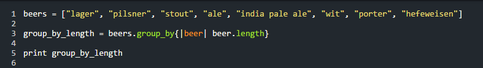
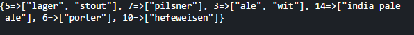
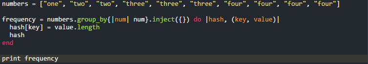
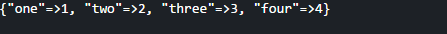

The group_by Method
Forcing Values Together Since 1995
7/13/2015
And we’re back! I hope you had a great 4th of July, I spent it mostly working and thinking about coding. Speaking of coding, let’s get down to brass tax. This past week we really started to get into the nitty gritty of Ruby methods. We were manipulating arrays and hashes (aka: a list of values) in a way that was challenging but incredibly enlightening. I come to you today with a nifty little method, used by arrays, called “group_by”.
The “group_by” method is, essentially, a way to collect all of the things that are similar in an array and group them together in a hash. For more information on the difference between arrays and hashes take a look at my blog here. So, for example, if we want to look at all of the similarly long words in an array we would write something like this.
The “group_by” method looks at every single value in the array and assigns it to the key that is equal to its length. The result would look like this for the beers array.
Let’s look at some more examples of how to use the “group_by” in Ruby. Checking to see how many times a value is in an array is a very useful algorithm to have in your back pocket. Here we take the array, in this case “numbers”, and group together all of its instances. We then assign the length of the new hash to the value it has.
By using the “inject” method we are telling the computer to count how many times there are the same words in our groups. We then get an output like this.
We could then sort the hash to get value we’re looking for. The possibilities are limitless!
These are just two of the many ways this method can be used. I’ll be updating this post with some more examples in the coming days/weeks.